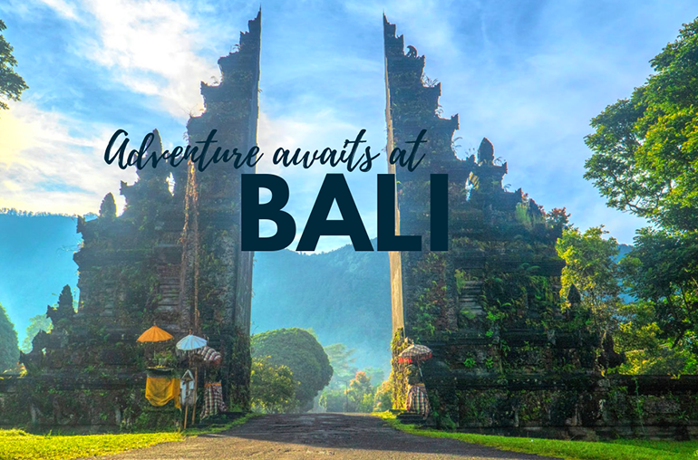

Wisata Tour Bali
Bali, sebuah pulau di Indonesia, dikenal sebagai surga wisata dengan keindahan alamnya yang memukau, budaya yang kaya, dan pantai-pantai yang mempesona. Salah satu daya tarik utama Bali adalah keindahan alamnya yang menakjubkan. Dari sawah terasering yang hijau di Tegallalang hingga gunung-gunung yang menjulang tinggi, Bali menawarkan pemandangan alam yang sangat memukau. Wisatawan sering mengunjungi Gunung Batur untuk menikmati pemandangan matahari terbit yang spektakuler atau menyaksikan tarian air terjun yang indah di Sekumpul.
Kuil Terkenal
Bali juga terkenal dengan warisan budayanya yang kaya. Kuil-kuil kuno seperti Pura Besakih atau Pura Tanah Lot mencerminkan keagungan arsitektur Hindu-Bali, dan sering kali menjadi tujuan utama bagi wisatawan yang ingin merasakan atmosfer rohaniah pulau ini. Upacara keagamaan dan tarian tradisional seperti Kecak dan Barong menawarkan pengalaman budaya yang mendalam. Selain itu, seni dan kerajinan Bali, seperti ukiran kayu, patung, dan lukisan, memperkaya pengalaman wisatawan yang mencari benda-benda unik sebagai kenang-kenangan.
Pantai Indah

Tidak dapat dipungkiri bahwa pantai-pantai Bali menjadi daya tarik utama bagi pengunjung dari seluruh dunia. Pantai Kuta yang terkenal dengan pasir putihnya yang lembut dan ombaknya yang cocok untuk berselancar, sering menjadi tempat favorit para peselancar. Pantai-pantai lain seperti Uluwatu, Seminyak, dan Nusa Dua juga menawarkan keindahan alam yang menakjubkan serta berbagai kegiatan rekreasi dan hiburan malam. Bali, dengan keunikan dan keragaman yang dimilikinya, menjadi destinasi wisata yang tak terlupakan bagi setiap pengunjung yang mencari pengalaman liburan yang istimewa.